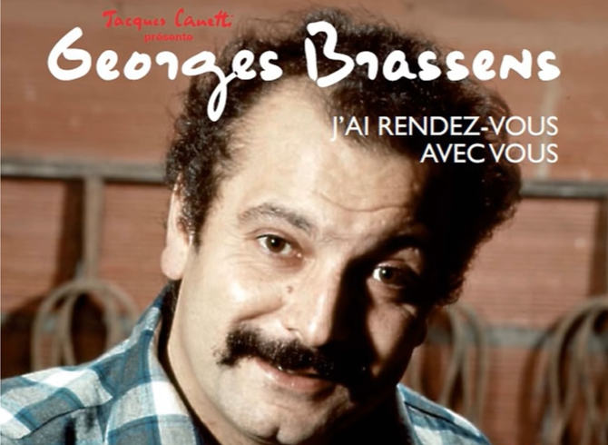

J'ai rendez-vous avec vous
I have a date with you
Georges Brassens (1952)
|
|
|
1) L'astre solaire, le soleil: Brassens dans plusieurs chansons se montre irrité par "les pays imbéciles où jamais il ne pleut". 2) Les "froufrous" sont des ajouts ornementaux sur des vêtements féminins. 3) Une gargotière est une tenancière de "gargote", un petit restaurant pas cher (de l'allemand "Gar gekocht"= "cuit à point"). 4) "Cou": Dans la traduction il est nécessaire d'étendre le sens de cette expression. 5) Brassens semble avoir écrit cette ligne pour obtenir la répétition du son "or"... 6) L'"amadou" est une substance végétale qu'on utilisait autrefois pour alumer un feu ou une torche. Quand les étincelles atteignaient la torche on soufflait sur elles et la torche s'enflammait. La dame (Püppchen) à qui cette chanson est destinée, était semble-t-il, prompte à se mettre en colère. 7) Comme pour la plupart des chansons de Brassens sur ce site, ces notes sont tirées du blog de David Yendley (http://dbarf.blogspot.fr/2012/05/alphabetical-list-of-my-brassens-songs.html). Cette traduction chantable est basée sur sa traduction en prose. |
1) Lastre solaire is the sun and Brassens on a number of occasions expressed his exasperation with a climate where there were too many sunny days. 2) Froufrous are showy or frilly ornamentation on a dress. 3) La gargotière is a person who runs « une gargote », which is a small cheap restaurant. 4)"Cou" means "neck". In translation the sense must be made more general... 5) Brassens seems to have written this line mainly because it amused him to have three « ors » in one line. The second or is the conjunction which means now not in a sense of time but holding a story together- eg: There was once a very rich king, now this king had three daughters . 6) The other word for amadou is torchwood. It is a vegetable substance which in the olden days was used to light a fire or a lamp. Sparks were dropped onto the torchwood on which you then blew on to start a flame. The lady (Püppchen) to whom the song was dedicated was apparently quickly stirred to passion. (7) Like for most of the Brassens songs at this site these notes are borrowed from David Yendley's blog (http://dbarf.blogspot.fr/2012/05/alphabetical-list-of-my-brassens-songs.html). This singable translation is based on his prose translation. |
|
 Brassens chante "J'ai rendez-vous avec vous" |